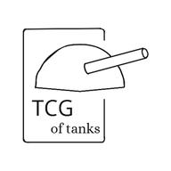

Politique de confidentialité
TCG de chars
Dernière mise à jour : 11 novembre 2026
En bref : sans compte, rien ne quitte ton appareil. Avec un compte, le jeu enregistre ton adresse e-mail et ta partie en ligne pour que tu la retrouves partout, et tes amis voient ce que tu choisis de partager avec eux. Il n’y a ni publicité, ni pistage, et rien n’est vendu. Tu peux supprimer ton compte à tout moment depuis le jeu.
1. Qui s’occupe de tes données
TCG de chars (aussi appelé « TCG of tanks ») est un jeu de cartes gratuit, créé et géré par une seule personne, à titre personnel et sans but commercial. C’est cette personne, le créateur du jeu, qui est responsable des données décrites ici.
2. Jouer sans compte (mode invité)
En mode invité, ta progression (cartes, argent, historique, deck, préférences) est enregistrée uniquement dans ton navigateur, sur ton appareil. Elle n’est envoyée à personne. Si tu effaces les données du navigateur, elle disparaît.
Quand le jeu est installé comme une application, une copie des fichiers du jeu est aussi gardée sur l’appareil pour qu’il marche sans internet.
3. Données enregistrées quand tu crées un compte
Pour te connecter
- ton adresse e-mail ;
- ton mot de passe, si tu t’inscris avec un e-mail. Il est géré et protégé par Google Firebase : le créateur du jeu ne peut pas le voir ;
- si tu te connectes avec Google : le nom, l’adresse e-mail et la photo de profil de ton compte Google, affichés dans le jeu.
Ta partie
- tes cartes, ton argent, tes boosters ouverts, tes achats et ventes et ton historique d’actions ;
- tes cartes préférées, ton deck, tes statistiques de combat, tes quêtes et événements ;
- la date de création de ton compte et de ta dernière sauvegarde.
Pour jouer avec tes amis
- un annuaire qui relie ton adresse e-mail à ton compte, pour qu’un ami puisse t’ajouter. On ne peut pas parcourir cet annuaire : il faut connaître ton adresse exacte ;
- tes demandes d’ami et ta liste d’amis (avec le nom et l’adresse e-mail de chacun) ;
- tes échanges de cartes en cours, tes duels (decks et cartes jouées) et ton dernier combat, que tes amis peuvent regarder en direct ou revoir ;
- ta vitrine : ton nom, tes cartes préférées, tes statistiques et ta collection.
Ces données servent uniquement à faire fonctionner le jeu : sauvegarder ta partie, la retrouver sur tous tes appareils et jouer avec tes amis.
4. Ce que voient tes amis
Seuls les comptes que tu as acceptés comme amis peuvent voir : ton nom, ton adresse e-mail, ta vitrine (cartes préférées, statistiques, collection) et tes combats en cours ou terminés. Toute personne qui a un compte et qui connaît ton adresse e-mail exacte peut t’envoyer une demande d’ami. Tu es libre de l’accepter ou non.
5. Services utilisés
- Google Firebase (Authentication et Cloud Firestore), qui héberge les comptes et les sauvegardes. Les données sont stockées sur les serveurs de Google, qui peuvent se trouver hors de l’Union européenne. Voir les règles de confidentialité de Firebase.
- GitHub Pages, qui héberge le site du jeu. Comme tout site, il reçoit des informations techniques (comme l’adresse IP) pour afficher les pages. Voir la déclaration de confidentialité de GitHub.
- Le code de connexion de Firebase est téléchargé depuis les serveurs de Google (gstatic.com), ou de jsDelivr en secours.
6. Ce que le jeu ne fait pas
- pas de publicité ;
- pas de statistiques de visite ni de pistage d’une page à l’autre ;
- pas de vente ni de partage de tes données avec d’autres entreprises ;
- pas d’accès à ta position, à tes contacts, à ta caméra ou à ton micro ;
- pas d’achat avec de l’argent réel : l’argent du jeu est fictif.
7. Combien de temps les données sont gardées
Les données de ton compte sont gardées tant que ton compte existe. Elles sont effacées dès que tu le supprimes.
Quelques traces partagées avec tes amis peuvent rester un peu plus longtemps de leur côté : ton nom dans le dernier combat qu’ils ont joué contre toi, un échange que tu avais déjà accepté ou une invitation à un duel. Le jeu les efface ou les remplace automatiquement lors de leur prochaine connexion ou de leur prochain combat.
8. Supprimer ton compte et tes données
Depuis le jeu (sur le site ou dans l’application) :
- touche le bouton 👤, en haut de l’écran, pour ouvrir la page « Compte », et connecte-toi ;
- tout en bas, dans « Supprimer mon compte », touche Supprimer mon compte… ;
- confirme avec ton mot de passe (ou ton compte Google), écris SUPPRIMER, puis touche Supprimer définitivement.
La suppression est immédiate et définitive. Elle efface ton compte de connexion, ta sauvegarde, ta vitrine, ton dernier combat, ton entrée dans l’annuaire, tes demandes d’ami, tes amitiés, les échanges et les duels que tu as lancés. Les échanges et les invitations à un duel que tes amis t’avaient envoyés sont refusés, et ils récupèrent leurs cartes.
Tu as oublié ton mot de passe ? Sur la page « Compte », touche Mot de passe oublié ? pour en recevoir un nouveau par e-mail, puis supprime ton compte. Si tu ne peux vraiment pas te connecter, écris au créateur du jeu (voir Contact) : ton compte sera supprimé à la main sous 30 jours.
Le site du jeu : jolygabin1903-maker.github.io/TCG-OF-TANKS
9. Tes droits
D’après le règlement européen sur la protection des données (RGPD), tu peux demander à voir tes données, les corriger, les effacer, en recevoir une copie ou t’opposer à leur utilisation. Tu peux déjà voir ta partie dans le jeu, à la page « Compte », et tout effacer toi-même. Pour le reste, écris au créateur du jeu (voir Contact). Si tu penses que tes droits ne sont pas respectés, tu peux aussi porter plainte auprès de la CNIL.
10. Si tu as moins de 15 ans
Tu peux jouer en invité sans rien donner. Pour créer un compte, demande d’abord l’accord d’un de tes parents. Un parent peut demander la suppression du compte de son enfant à tout moment (voir Supprimer ton compte).
11. Contact et changements
Pour toute question ou demande sur tes données, ouvre une demande sur la page GitHub du jeu. Comme cette page est publique, n’y écris pas ton adresse e-mail ni ton mot de passe.
Si cette page change, la date en haut sera mise à jour.
← Retour au jeu